sdmTMBexperiments collects experimental helpers for
fitted sdmTMB models.
This vignette walks through the main functions, fitting small/fast
models throughout so the whole vignette runs.
Model comparison
Fit a couple of models and compare their indices and spatial
predictions. Mohn’s rho indicates the summed proportional difference
during the final year and makes only sense when comparing multiple
models. Included here as an example. Note that the plot()
functions return standard ggplot2 figures and
you can add layers or modify them as you would any other ggplot
object.
mesh <- make_mesh(pcod, c("X", "Y"), cutoff = 20)
m1 <- sdmTMB(
density ~ 0 + as.factor(year),
data = pcod,
time = "year",
mesh = mesh,
family = tweedie()
)
m2 <- sdmTMB(
density ~ 0 + as.factor(year) + depth_scaled,
data = pcod,
time = "year",
mesh = mesh,
family = tweedie()
)
nd <- replicate_df(qcs_grid, "year", unique(pcod$year))
cmp <- compare_models(m1, m2, newdata = nd, object_crs = 32609)
#> ℹ `ln_tau_O` is an internal parameter affecting `sigma_O`
#> ℹ `sigma_O` is the spatial standard deviation
#> ℹ `ln_tau_E` is an internal parameter affecting `sigma_E`
#> ℹ `sigma_E` is the spatiotemporal standard deviation
#> ℹ `ln_kappa` is an internal parameter affecting `range`
#> ℹ `range` is the distance at which data are effectively independent
# Index time series, annotated with Mohn's rho and modified using ggplot2 syntax
plot(cmp, mohn = TRUE) +
scale_x_continuous(
breaks = seq(min(pcod$year), max(pcod$year), by = 2),
labels = substr(seq(min(pcod$year), max(pcod$year), by = 2), 3, 4)
)
#> Scale for x is already present.
#> Adding another scale for x, which will replace the existing scale.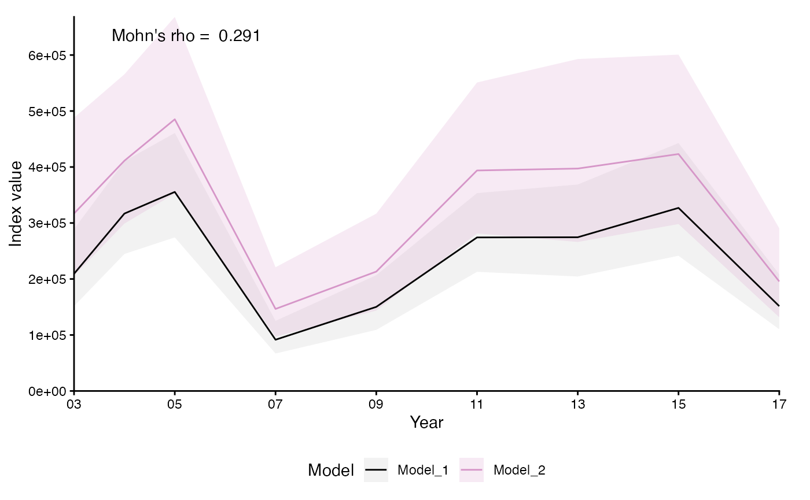
# per-cell prediction-difference maps
plot(cmp, type = "spatial", fill_prefix = "Biomass density")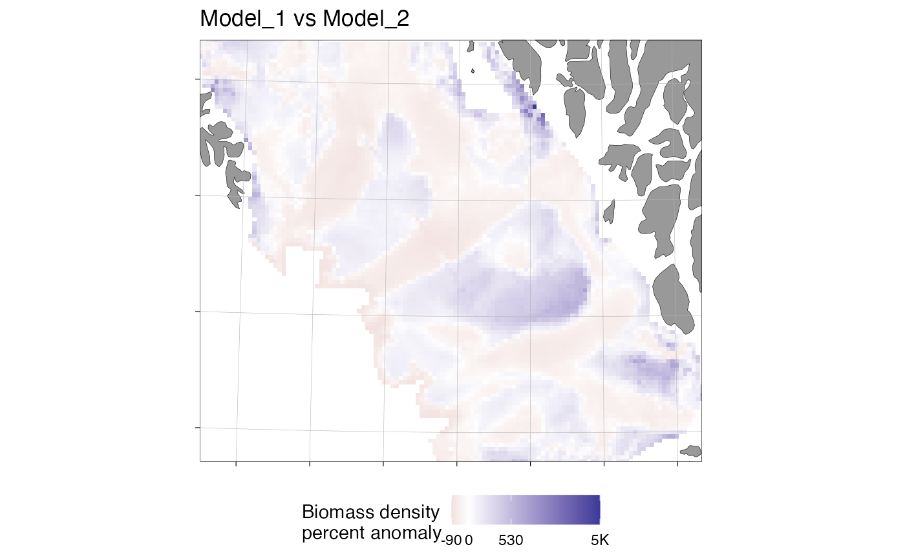
The spatial_response argument controls which per-cell
summary of the prediction difference is mapped, since a model comparison
typically spans several years and these need to be summarised down to
one map. All three options are computed from the response-scale (not
log-scale) predictions. "mean" is the average absolute
difference across years, in the response’s own units (e.g. density); it
is not comparable between cells with very different baseline abundance.
"mean_pr_diff" (the default, used above) is the percent
difference between the across-year mean predictions — a ratio
of averages, not an average of ratios. "pr_mean" is instead
the average of each year’s own percent difference; because each year is
divided by that year’s own reference value, a handful of low-abundance
years/cells can dominate this average with large, noisy percentages,
which is why "mean_pr_diff" is the more robust default. See
?plot.sdmTMB_model_comparison for the exact formulas.
In practice, "pr_mean" and "mean_pr_diff"
are usually close to each other and can look nearly identical on the
map: m1 and m2 differ by a single covariate
here, and the reference model’s predictions don’t swing wildly from year
to year within a cell, so a mean-of-ratios and a ratio-of-means end up
similar. They are not identical, though — the two summaries are highly
correlated but diverge most for cells that have at least one year with
an unusually small reference-model estimate, which inflates that single
year’s percent difference in "pr_mean" (but not
"mean_pr_diff", which only sees the multi-year
average).
# Aggregate to one value per cell, exactly as plot(..., type = "spatial") does
agg <- cmp$grid[[1]] |>
dplyr::group_by(X, Y) |>
dplyr::reframe(
pr_mean = mean(pr_diff, na.rm = TRUE),
mean_pr_diff = mean(mean_pr_diff, na.rm = TRUE)
)
cor(agg$pr_mean, agg$mean_pr_diff)
#> [1] 0.9993678
max(abs(agg$pr_mean - agg$mean_pr_diff))
#> [1] 57.80505
plot(
cmp,
type = "spatial",
fill_prefix = "Biomass density",
spatial_response = "pr_mean"
)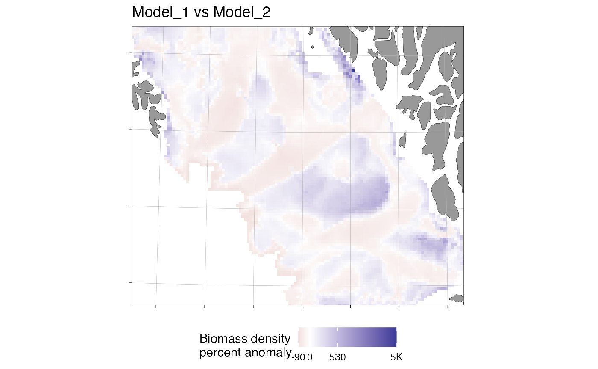
Diagnostics and result maps
All map helpers render on a ggOceanMaps::basemap().
Plotting the SPDE mesh and model results requires knowing the
utm_crs used by the sdmTMB::add_utm_columns()
function. The X and Y coordinates are divided by 1000 in that function.
The example dataset does not contain information about the UTM zone, but
the information is extracted from sdmTMB examples. In real data, use the
sdmTMB::get_crs()
function to get the correct UTM zone.
plot_mesh(mesh, crs = 32609, data = pcod, value = "density")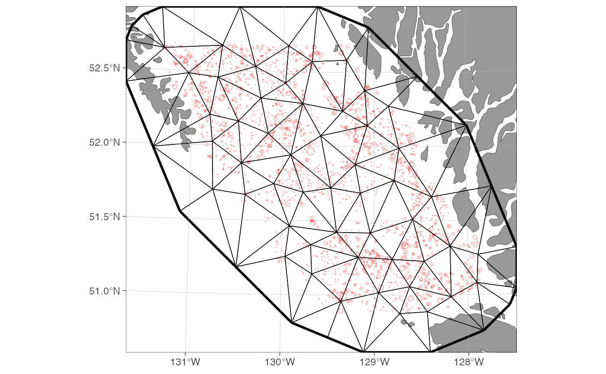
pred <- predict(m1, newdata = nd, type = "response") # response scale, not link scale
plot_prediction_map(pred, crs = 32609, transform = "sqrt") # density averaged over years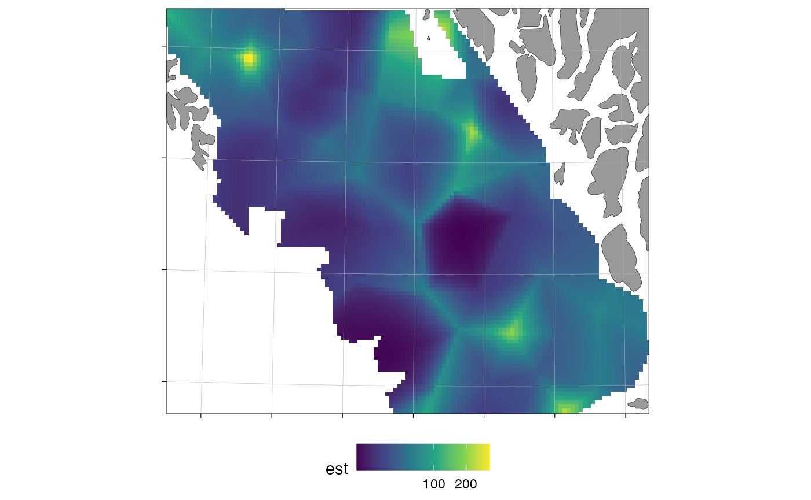
plot_random_field(pred, crs = 32609, field = "omega") # spatial field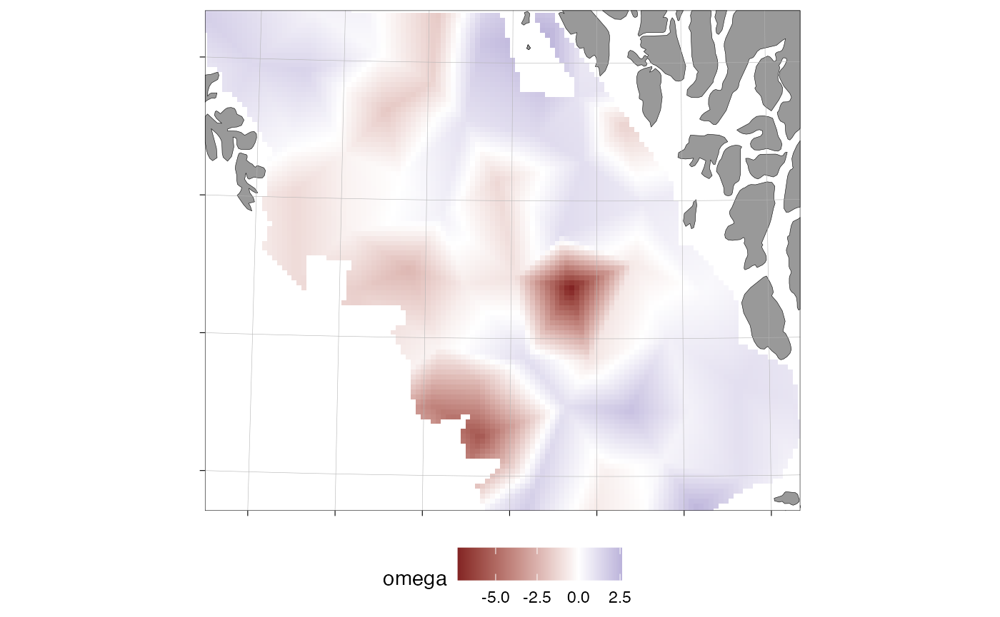
plot_residual_qq(m1)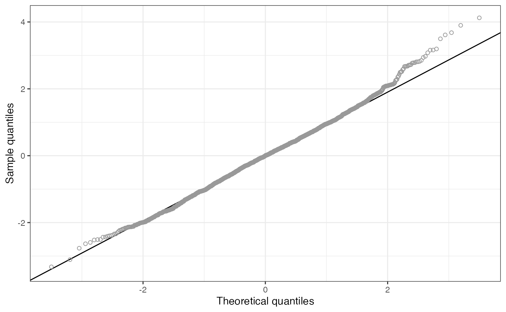
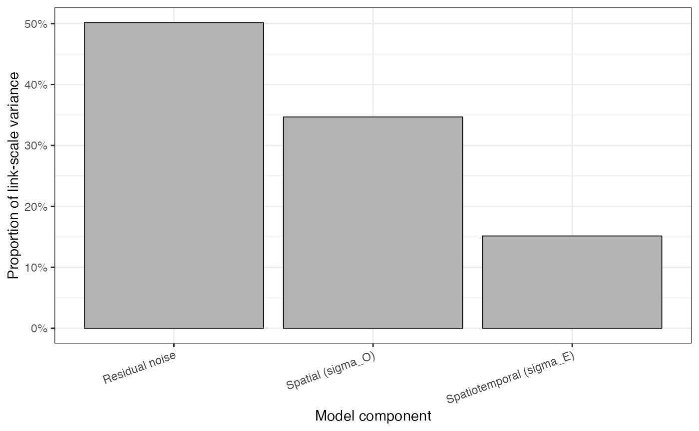
Model diagnostics plots automatically detect delta models and plot all components. The example below fits a delta model and plots the residuals and variance partitioning.
m3 <- sdmTMB(
density ~ 0 + as.factor(year),
data = pcod,
time = "year",
mesh = mesh,
family = delta_lognormal()
)
plot_residual_qq(m3)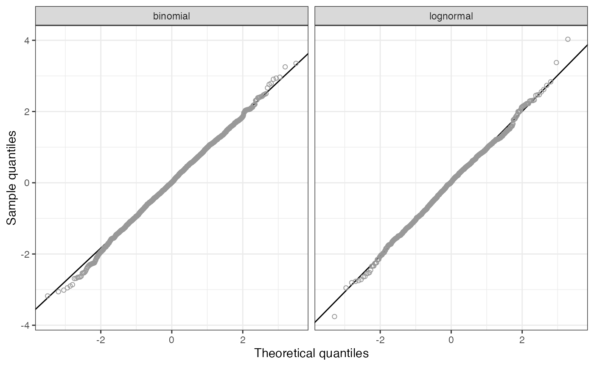
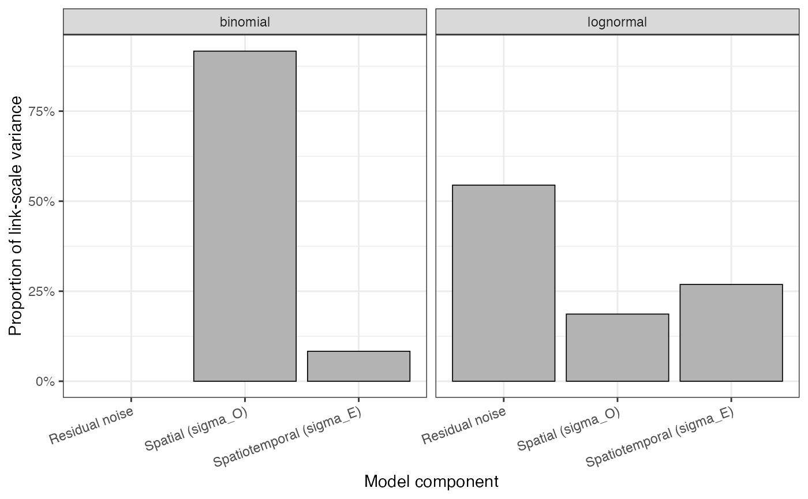
Mesh-resolution sensitivity
Mesh resolution can affect model results.
compare_meshes() fits a model at multiple mesh resolutions
and compares the resulting indices and spatial predictions. The example
below compares two meshes with cutoffs of 10 and 30 km, using the 20 km
mesh as the reference, and shows how finer mesh size leads to generally
lower index estimates.
mc <- compare_meshes(
m2,
mesh_cutoffs = c(10, 30),
newdata = nd,
object_crs = 32609,
reference_name = "20"
)
plot(mc, cutoff_label = "Cutoff (km)")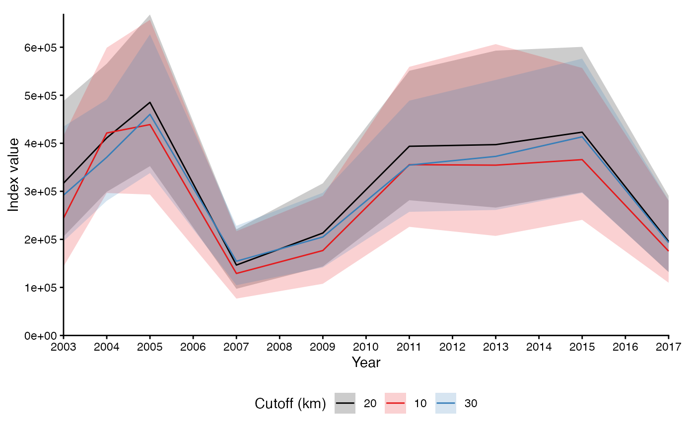
plot(mc, type = "spatial", spatial_response = "mean")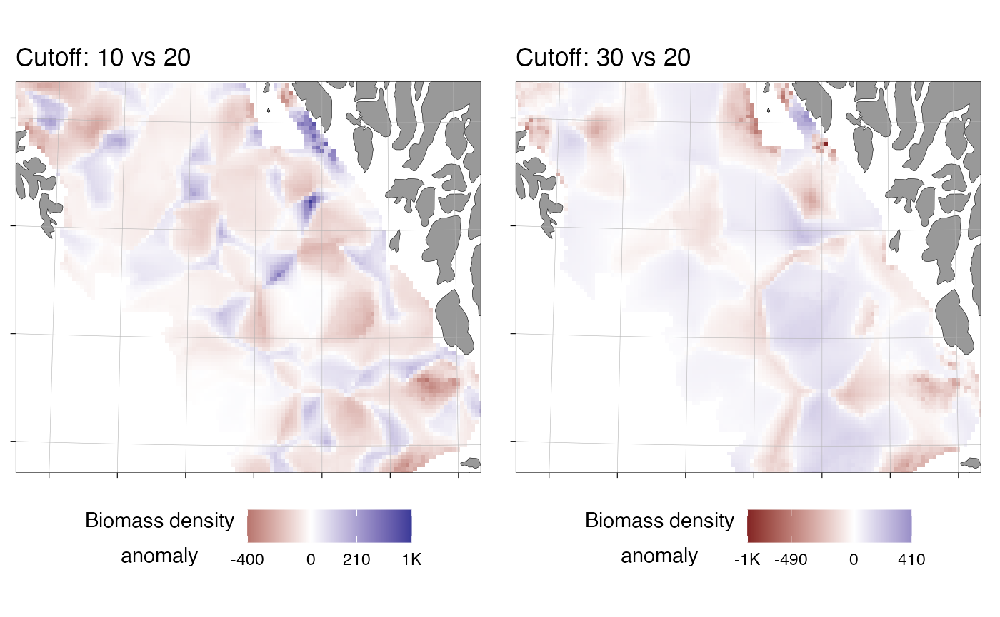
The sdmTMB_mesh_cv() performs a block cross-validation
of a fitted model at multiple mesh resolutions. The example below
compares the cutoff values in the example above and indicates that the
coarsest mesh would provide the best model fit, which is somewhat
surprising. The function is still very experimental, however. The blockCV
package is required for this function.
# Requires the 'blockCV' package.
cv <- sdmTMB_mesh_cv(m2, mesh_cutoffs = c(10, 20, 30), k = 3)
cv
#> # A tibble: 3 × 10
#> cutoff crashed converged sanity sum_loglik mean_aic deltaNLL deltaNLL_pr
#> <int> <lgl> <lgl> <lgl> <dbl> <dbl> <dbl> <dbl>
#> 1 30 FALSE TRUE FALSE -8040. 8752. 0 0
#> 2 20 FALSE TRUE FALSE -8071. 8676. 31.4 0.391
#> 3 10 FALSE TRUE TRUE -8435. 8561. 395. 4.91
#> # ℹ 2 more variables: deltaAIC <dbl>, deltaAIC_pr <dbl>
plot(cv)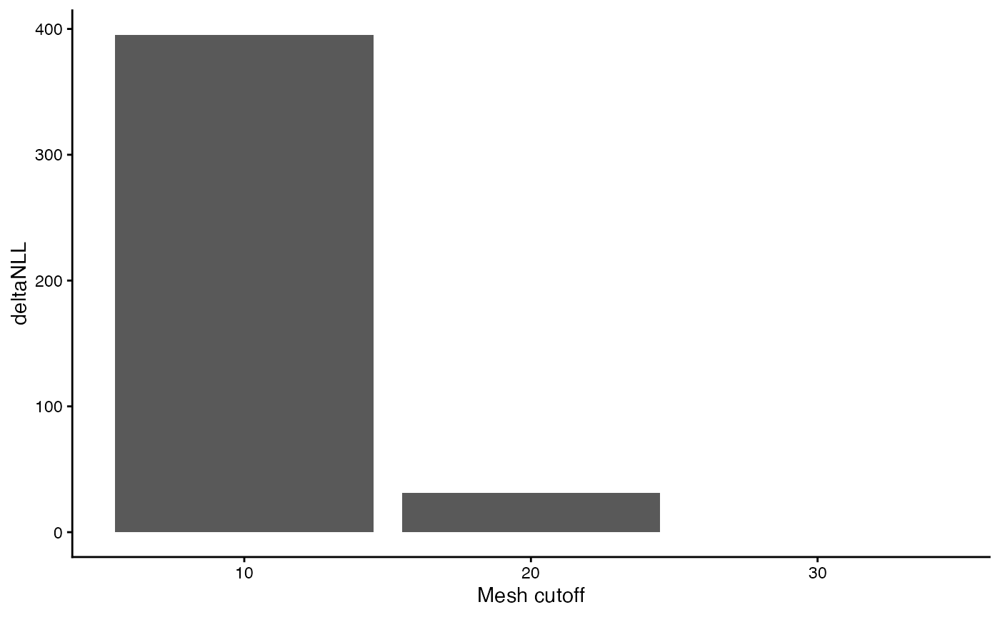
Retrospective analysis
Retrospective analysis may be required in assessment context to
demonstrate model stability. The sdmTMB_retro() function
fits a model to the full time series, then sequentially removes the most
recent years and refits the model. The example below removes the last 5
years of data and plots the resulting indices. The
index_divisor and index_unit arguments are
used to scale the index for plotting.
retr <- sdmTMB_retro(m1, nd, nyears = 5)
plot(retr, index_divisor = 1e3, index_unit = "1000 t")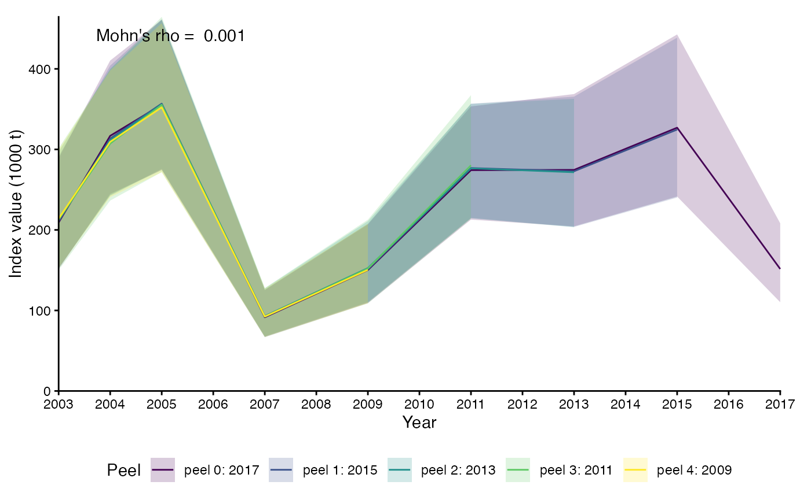
Prediction grids
The bundled sebastes dataset (beaked redfish survey
stations) is used to demonstrate the prediction-grid helpers.
make_survey_prediction_region() builds a concave hull
around a survey’s stations, and make_prediction_grid() lays
a regular grid over it. The function can be used to extract depths and
drop cells outside a specified depth range. The example below builds a
prediction region and grid for the EggaN survey series, and extracts
depths from the default bathymetry source (GEBCO 2022).
data(sebastes)
eggan <- subset(sebastes, cruiseseries == "EggaN")
region <- make_survey_prediction_region(eggan, crs = 32633, concavity = 5)
# the result is an sf object
ggOceanMaps::qmap(region, fill = I(NA))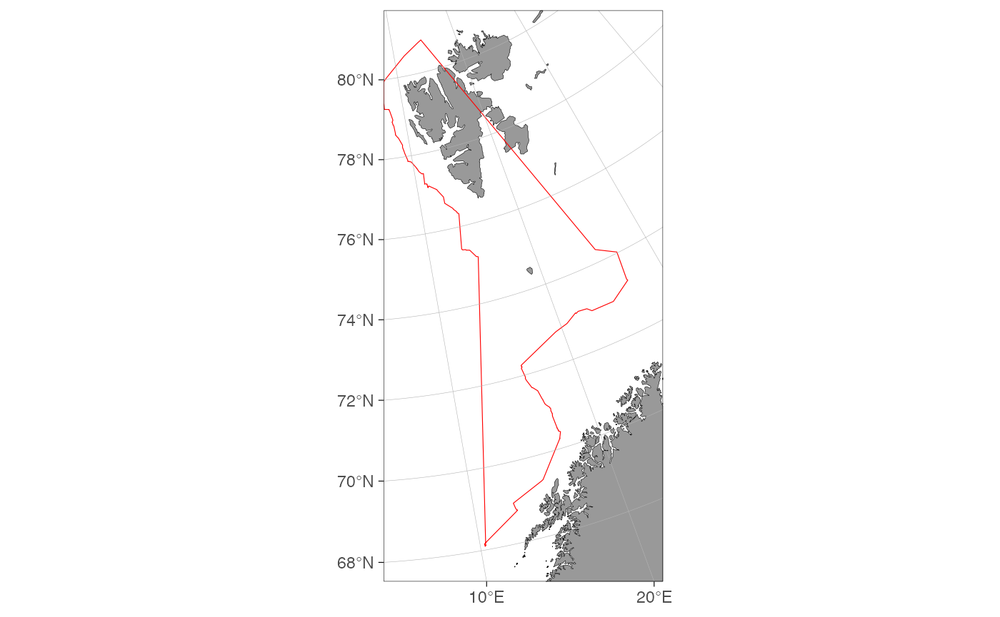
# max_depth turns on depth extraction, via ggOceanMaps::get_depth() by
# default (bathy_style controls the bathymetry source); cells outside
# c(1, max_depth) are dropped. plot() then colours by depth automatically.
grid <- make_prediction_grid(region, resolution = 20, max_depth = 1000)
range(grid$depth)
#> [1] 2.007292 975.687500
plot(grid)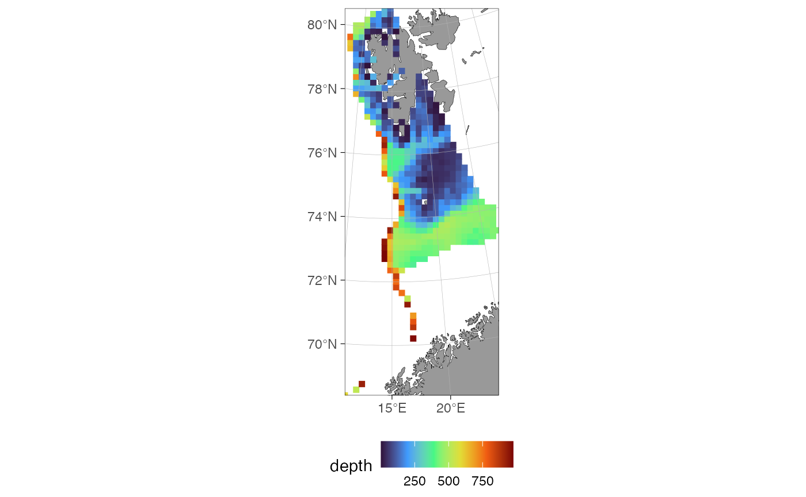
Survey comparison and prediction grids
When compiling a survey index from multiple survey time-series, it is
often useful to compare the survey-specific indices to the compiled
index to understand which surveys carry the signal in the compiled
index. The compare_surveys() function fits a model per
survey series, builds each survey’s prediction grid, and compares the
survey indices to a compiled reference index. The example below uses the
bundled sebastes dataset (beaked redfish survey stations)
to demonstrate this functionality. EcoS and WinterS are the two series
with a coverage over the Barents Sea, so we use those two, restricted to
a few recent years and a coarse mesh to keep this vignette fast.
Both compiled_model and the survey models below are fit
with a swept_area offset, so the response is
biomass (raw catch), not density:
density is already swept_area-normalised
(density = biomass / swept_area), so fitting it together
with a swept_area offset would double-correct for effort.
Predicting onto full_grid (which has no swept-area column)
makes predict.sdmTMB()
print an informational message that it is assuming an offset of zero for
the prediction — this is expected: grid cells aren’t real trawl hauls,
so we deliberately predict at a zero offset (i.e. per 1 swept-area unit,
which is exactly density’s definition) and let the
area argument of get_index_split() /
compare_surveys() do the area weighting instead.
compare_surveys() / compare_models() /
compare_meshes() already suppress this message internally,
so it won’t show when calling those; it can still show for a
direct get_index_split()/predict()
call on an offset model, such as compiled_index below.
swept_area is recorded in square nautical miles (see
?sebastes), not the km² implied by the
X/Y grid coordinates, so cell areas must be
converted to nautical miles before squaring.
sub <- subset(sebastes, cruiseseries %in% c("EcoS", "WinterS") & year >= 2020)
# A simple "compiled" full-domain model and index, used as the reference
compiled_mesh <- make_mesh(sub, c("X", "Y"), cutoff = 50)
compiled_model <- sdmTMB(
biomass ~ 0 + as.factor(year),
data = sub,
time = "year",
mesh = compiled_mesh,
family = tweedie(),
spatiotemporal = "iid",
offset = log(sub$swept_area)
)
region <- make_survey_prediction_region(sub, crs = 32633, concavity = 5)
grid <- make_prediction_grid(region, resolution = 40, max_depth = 500)
plot(grid)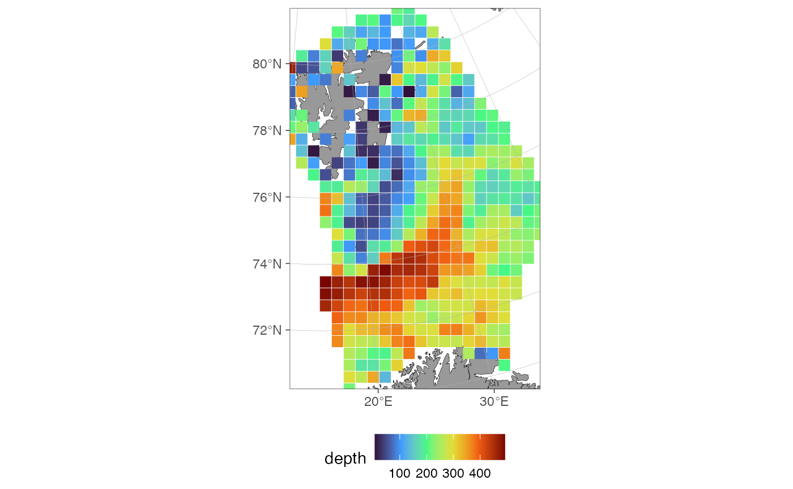
full_grid <- replicate_df(
grid,
"year",
unique(sub$year)
)
# swept_area is in square nautical miles: convert the 40 km grid resolution
# to nautical miles before squaring, so cell area matches those units.
cell_area <- (40 / 1.852)^2
compiled_index <- get_index_split(
compiled_model,
newdata = full_grid,
area = cell_area,
silent = TRUE
)
sc <- compare_surveys(
data = sub,
compiled_index = compiled_index,
compiled_model = compiled_model,
surveys = c("EcoS", "WinterS"),
newdata = full_grid,
object_crs = 32633,
mesh_cutoff = 50,
offset_col = "swept_area",
area = cell_area,
verbose = FALSE
)
plot(sc, index_divisor = 1e6, unit = "kt") # scaled index time series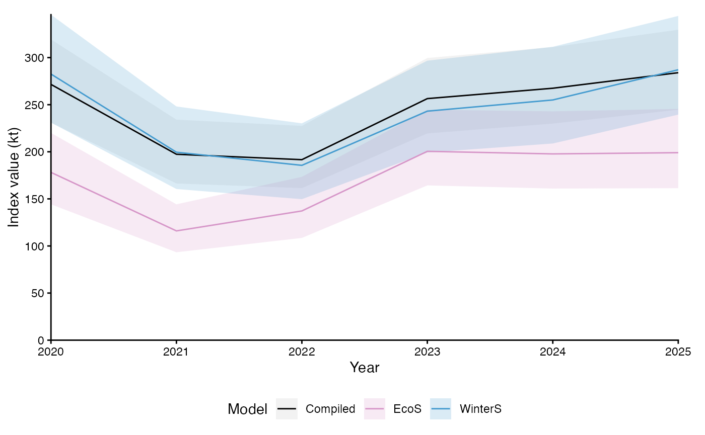
plot(sc, type = "scatter") # survey vs compiled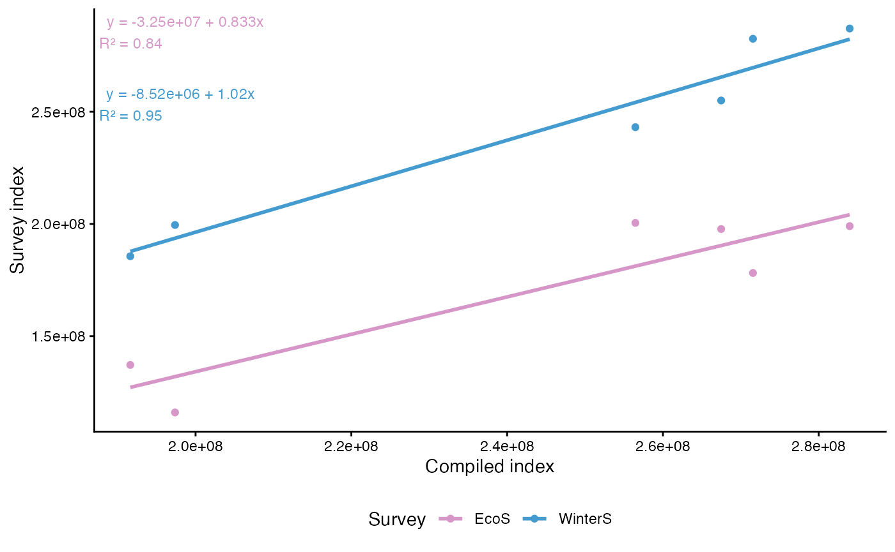
The two prediction-difference maps are tall relative to their width
(the survey domain’s north-south extent is larger than its east-west
extent), so this last plot uses a taller fig.height than
the defaults above to fit both side by side without wasted space.
plot(sc, type = "spatial", spatial_response = "mean") # prediction differences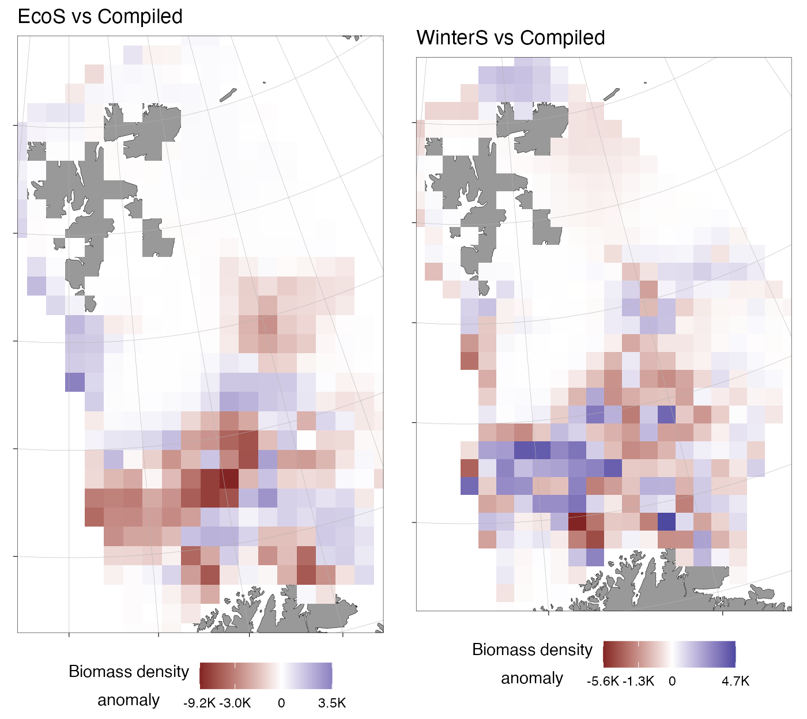
The individual survey indices are lower than the compiled index because the survey models are fit to a smaller spatial domain than the compiled model.